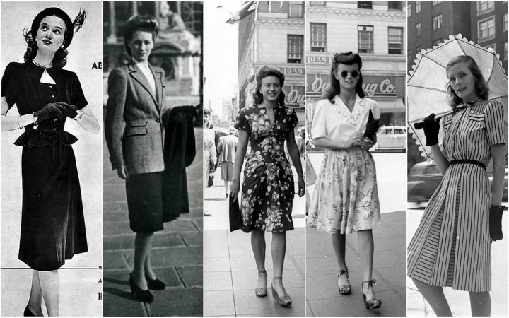
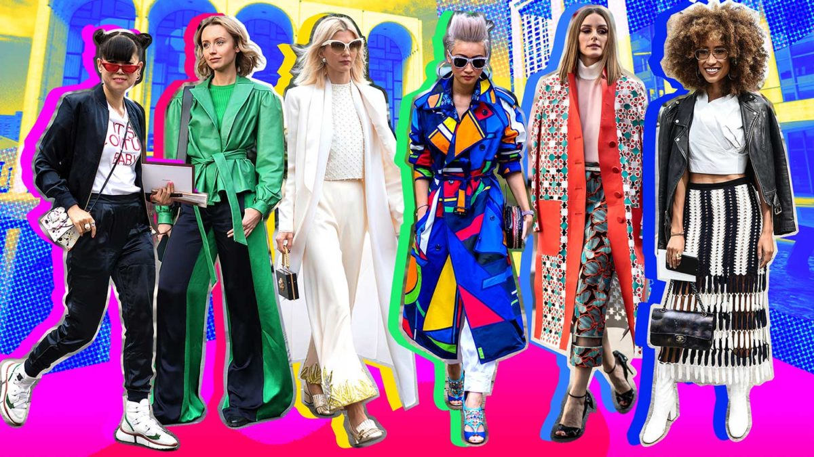

Якщо я одягнусь модно і буду слідкувати за останніми тенденціями світових подіумів, чи з’явиться у мене власний, неповторний стиль, який буде відрізняти мене від інших?
Кожна з нас неповторна, кожна жінка хоче мати щось таке, що відрізнить її зовнішній вигляд від інших. Мода і стиль – два поняття, такі схожі на один погляд, але такі різні, якщо заглиблюватись в них. Мода (від французького слова mode і від латинського modus – міра, спосіб, образ, правило) не постійна, завжди в пошуках нового, змінюється різко і неочікувано. Вислів «вдягнений по моді» виник у 17 столітті, коли французька мода стала прикладом для Європи. Багато науковців та істориків сперечаються звідки пішла мода, але більшість стверджують, що матір моди – Франція.
Успіх дизайнера залежить від його вміння зловити настрій суспільства. Диктує моду в першу чергу настрій соціуму, його мрії, ідеали та конкретний період часу. Післявоєнний період підніс модний дім Діор на вершину слави. Чому? Тому що,слабка половина людства так скучила за ніжними та жіночими сукнями. А Діор просто втілив їх мрії в реальність.
Багато факторів диктують моду ,наприклад ідеали краси та фігури. Одяг який підкреслює ці «ідеали» і стає модним. Мода – дзеркало народу. Якщо мода виражає чуже сприйняття, то стиль – діло особисте. Це особистий почерк, ідеал та портрет. Стиль розповідає про Вас без голосу, відрізняє від оточуючих. Мода в одязі, а стиль – в людині яка його носить. Стиль формує одяг, манери, спосіб життя. Стиль стабільніший за моду. Звичайно, з роками все змінюється, але деякі акценти стилю все рівно залишаються. Наприклад, червона помада щодня, або білий верх, не залежно від формату одягу.
Знайти свій стиль – означає знайти гармонію між зовнішнім та внутрішнім настроєм.
Щоб знайти свій неповторний стиль – вивчай себе. Мода допоможе доповнити стиль, але стиль ніколи не доповнить моду. Сучасні дівчата, які вдягаються «по моді» вважають це власним стилем,своєю особливістю. Тому, головне не плутати ці два поняття. Хочеш власний стиль? Шукай. Шукай не тільки на подіумах, але і у самій собі .
